Série 28
Image de la question, choix, et correction.
Q1
A1
3 pt
Correction: B — De garder son fils.
A. D’aller au supermarché.
B. De garder son fils.Bonne réponse
C. De préparer un dessert.
D. De rester dormir.
Q2
A1
3 pt
Correction: C — 16 euros.
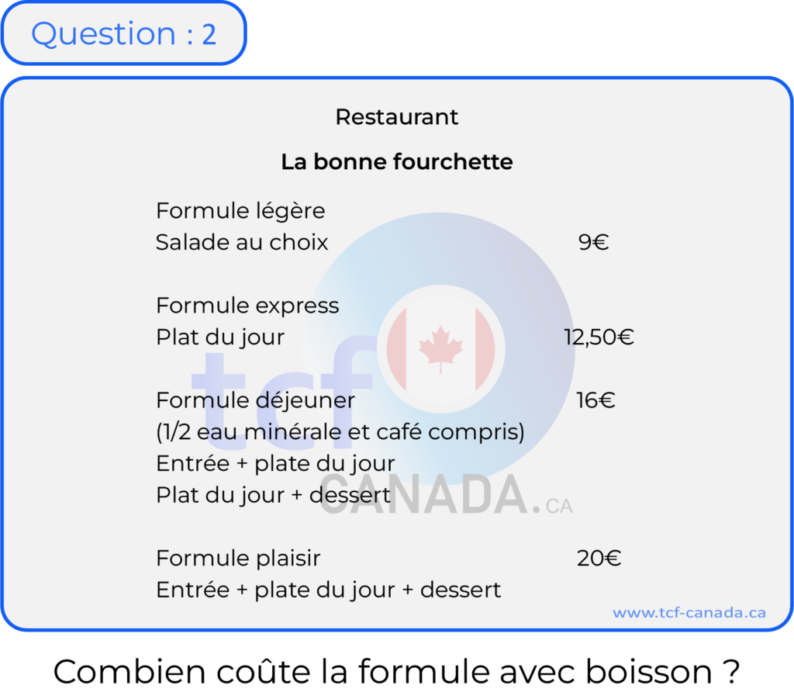
A. 9 euros.
B. 12,50 euros.
C. 16 euros.Bonne réponse
D. 20 euros.
Q3
A1
3 pt
Correction: A — Des cours gratuits.

A. Des cours gratuits.Bonne réponse
B. Des postes à l’étranger.
C. Des stages en Italie.
D. Des voyages en Europe.
Q4
A1
3 pt
Correction: C — Jouer au cinéma.

A. Avoir un bébé.
B. Déménager en France.
C. Jouer au cinéma.Bonne réponse
D. Organiser une exposition.
Q5
A2
9 pt
Correction: C — De jeunes mamans.

A. De jeunes enfants.
B. Des femmes et des enfants.
C. De jeunes mamans.Bonne réponse
D. Des parents avec leurs enfants.
Q6
A2
9 pt
Correction: A — À la caisse d’un cinéma.
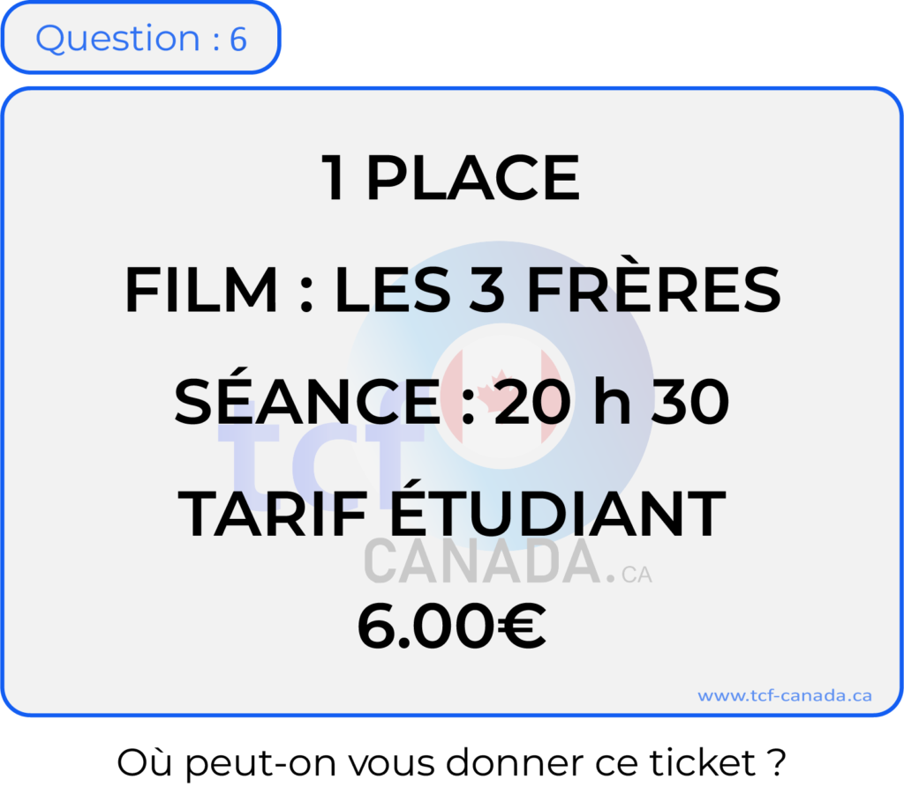
A. À la caisse d’un cinéma.Bonne réponse
B. À l’accueil d’un opéra.
C. À l’entrée d’un musée.
D. Au guichet d’un théâtre.
Q7
A2
9 pt
Correction: B — De regarder un spectacle.
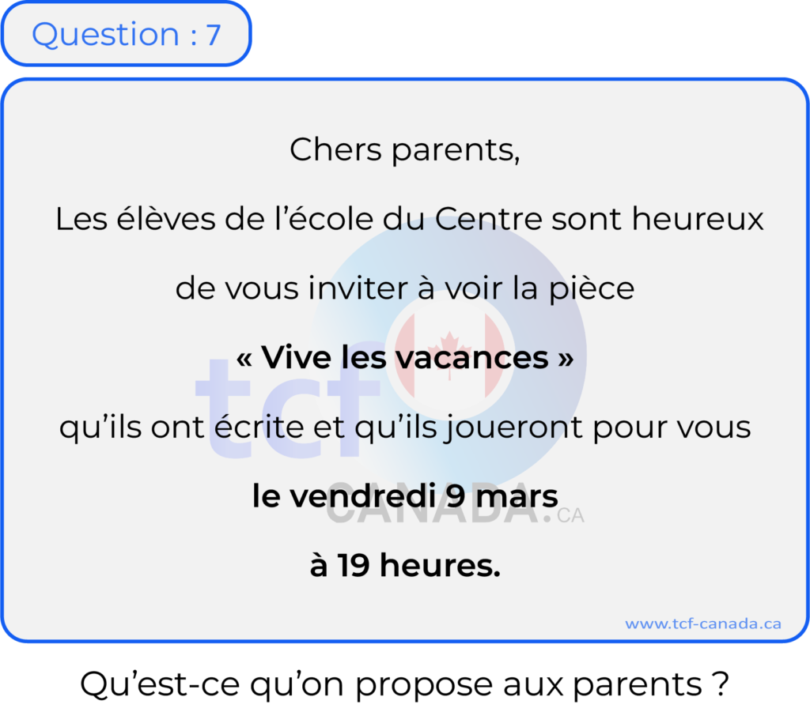
A. De préparer un voyage.
B. De regarder un spectacle.Bonne réponse
C. De venir à une réunion.
D. De visiter une classe.
Q8
A2
9 pt
Correction: C — Pour présenter des élèves.

A. Pour changer un horaire.
B. Pour organiser une fête.
C. Pour présenter des élèves.Bonne réponse
D. Pour proposer une sortie.
Q9
A2
9 pt
Correction: A — D’apprendre à préparer des plats chez soi.

A. D’apprendre à préparer des plats chez soi.Bonne réponse
B. De devenir un chef cuisinier professionnel.
C. De réaliser des repas pour de grands groupes.
D. De trouver de bonnes recettes sur internet.
Q10
A2
9 pt
Correction: C — L’entrée se fera par une autre porte.
A. Elle sera fermée au mois de mars.
B. Il y aura des travaux à l’intérieur.
C. L’entrée se fera par une autre porte.Bonne réponse
D. Le service municipal réparera les lieux.
Q11
B1
15 pt
Correction: B — Pour lui proposer de passer le voir avec son amie.
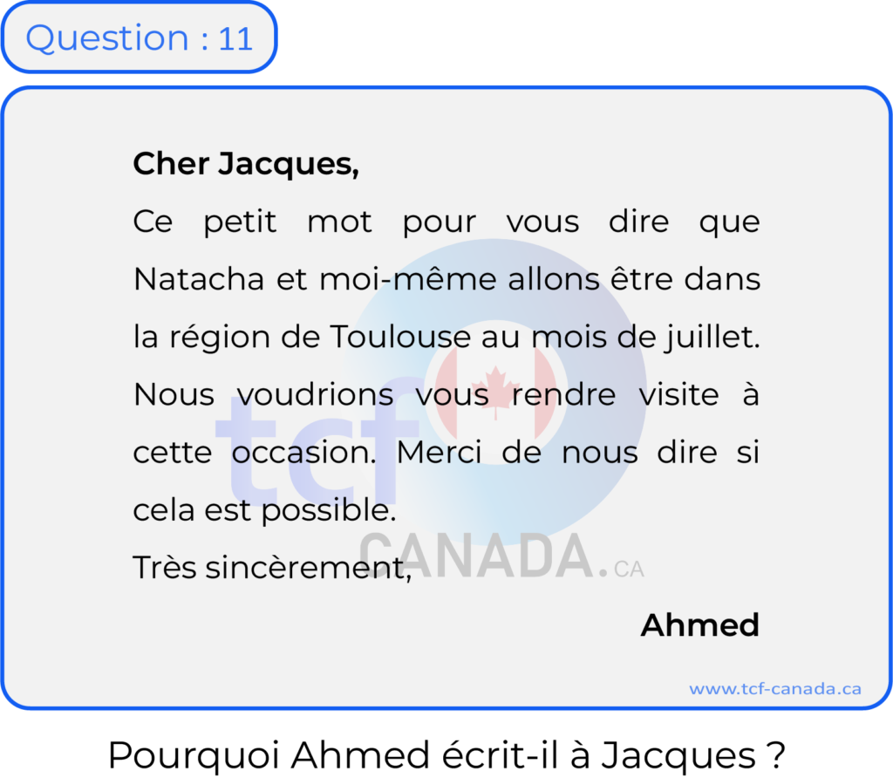
A. Pour lui communiquer la date de ses fiançailles.
B. Pour lui proposer de passer le voir avec son amie.Bonne réponse
C. Pour lui annoncer son déménagement à Toulouse.
D. Pour lui demander de l’accompagner en voyage.
Q12
B1
15 pt
Correction: B — De devenir membre de l'orchestre municipal.
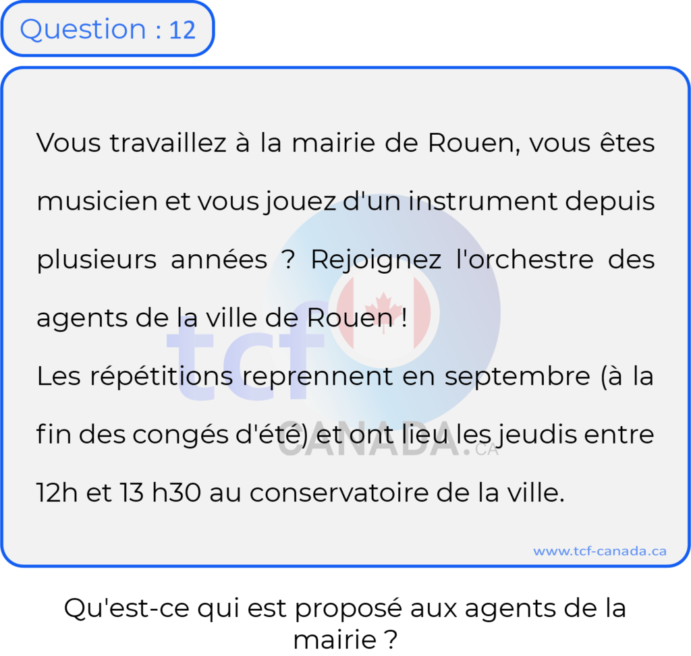
A. D'assister à un concert à Rouen.
B. De devenir membre de l'orchestre municipal.Bonne réponse
C. De suivre des cours de musique à la rentrée.
D. De visiter le conservatoire.
Q13
B1
15 pt
Correction: C — Une chambre chez l'habitant.
A. À un échange de maison.
B. Un studio en centre-ville.
C. Une chambre chez l'habitant.Bonne réponse
D. Une colocation entre étudiants.
Q14
B1
15 pt
Correction: A — L'assistance d'une personne.
A. L'assistance d'une personne.Bonne réponse
B. Le menu de vos déjeuners.
C. Le programme de la réunion.
D. Le plan des transports publics.
Q15
B1
15 pt
Correction: B — Les dangers des aliments mal conservés.
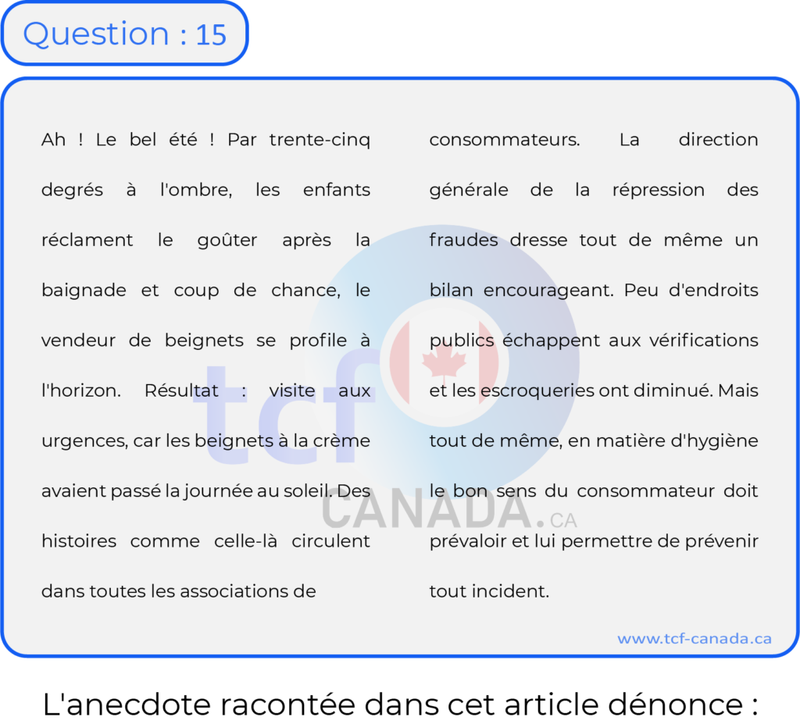
A. Le grand nombre de vendeurs ambulants.
B. Les dangers des aliments mal conservés.Bonne réponse
C. Les méfaits des collations après le bain.
D. L'inconscience des enfants imprudents.
Q16
B1
15 pt
Correction: B — De réutiliser des objets.
A. De diffuser de la musique.
B. De réutiliser des objets.Bonne réponse
C. De s'engager en politique.
D. De tourner des publicités.
Q17
B1
15 pt
Correction: D — De visiter une grande exposition.
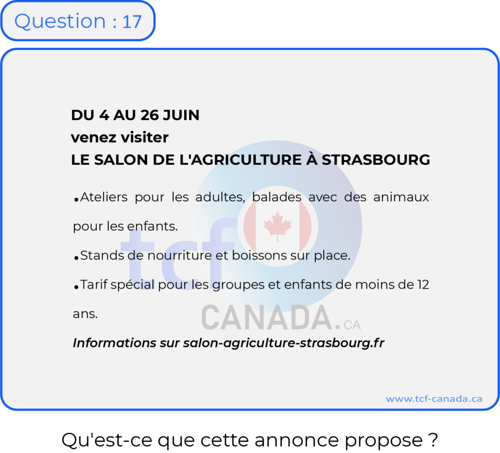
A. De découvrir un parc d'animation.
B. De gagner un séjour en famille.
C. De se promener dans une ferme.
D. De visiter une grande exposition.Bonne réponse
Q18
B1
15 pt
Correction: D — Les étiquettes trompeuses.
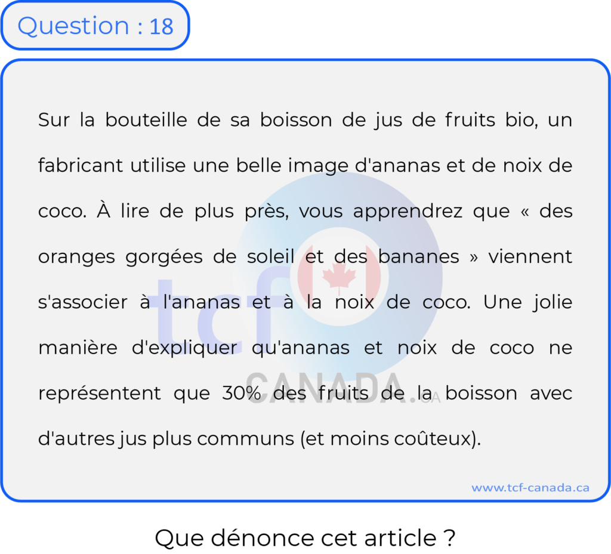
A. L'ajout d'ingrédients malsains.
B. Le prix des produits exotiques.
C. Les annonces publicitaires.
D. Les étiquettes trompeuses.Bonne réponse
Q19
B1
15 pt
Correction: C — Elle est déjà finie.
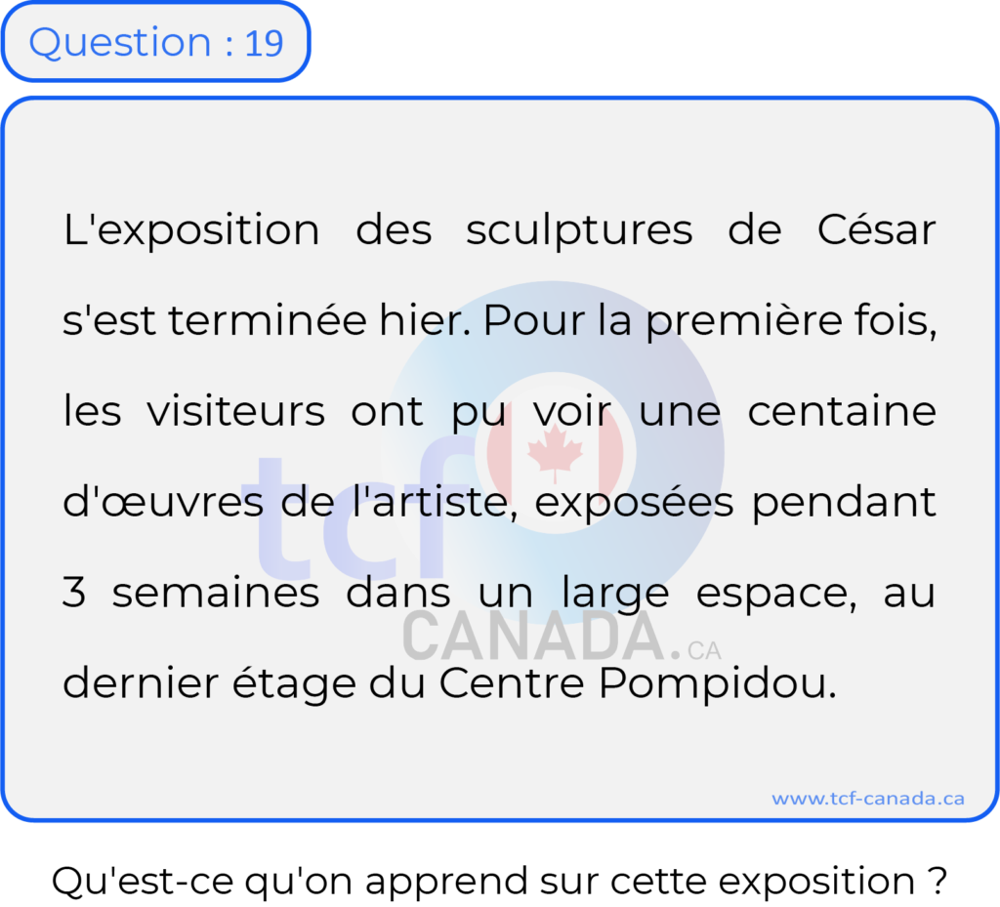
A. C'est un succès.
B. Elle changera de lieu.
C. Elle est déjà finie.Bonne réponse
D. L'entrée est gratuite.
Q20
B2
21 pt
Correction: B — Il a trouvé quelque chose dans son fromage.
A. Il a avalé un mauvais morceau de fromage.
B. Il a trouvé quelque chose dans son fromage.Bonne réponse
C. Il est tombé malade en mangeant du fromage.
D. Il s'est fait mal aux dents avec le fromage.
Q21
B2
21 pt
Correction: A — actrice à la télévision française.
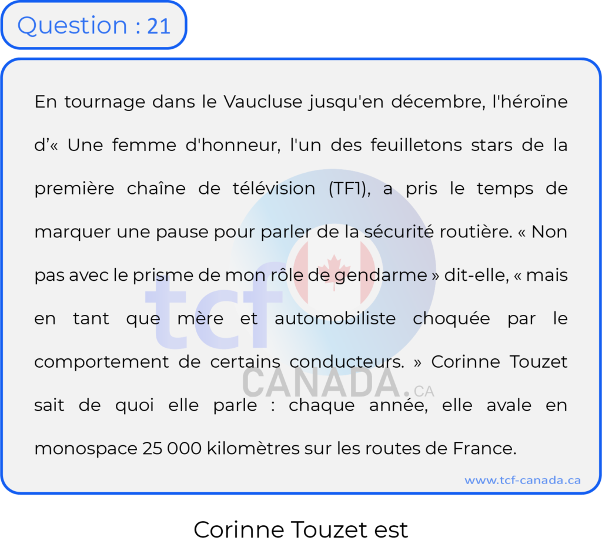
A. actrice à la télévision française.Bonne réponse
B. gendarme sur les routes de France.
C. championne française de conduite.
D. reporter pour la télévision française.
Q22
B2
21 pt
Correction: B — Elle a diversifié son alimentation.

A. Elle a consommé des sucres lents.
B. Elle a diversifié son alimentation.Bonne réponse
C. Elle a préféré sauter certains repas.
D. Elle a privilégié les repas rapides.
Q23
B2
21 pt
Correction: D — Sélectionner un souvenir.
A. Effectuer un calcul.
B. Évoquer un fait divers.
C. Fournir un support.
D. Sélectionner un souvenir.Bonne réponse
Q24
B2
21 pt
Correction: B — le triomphe d'une opinion émise par Apollinaire, mais autrefois combattue.
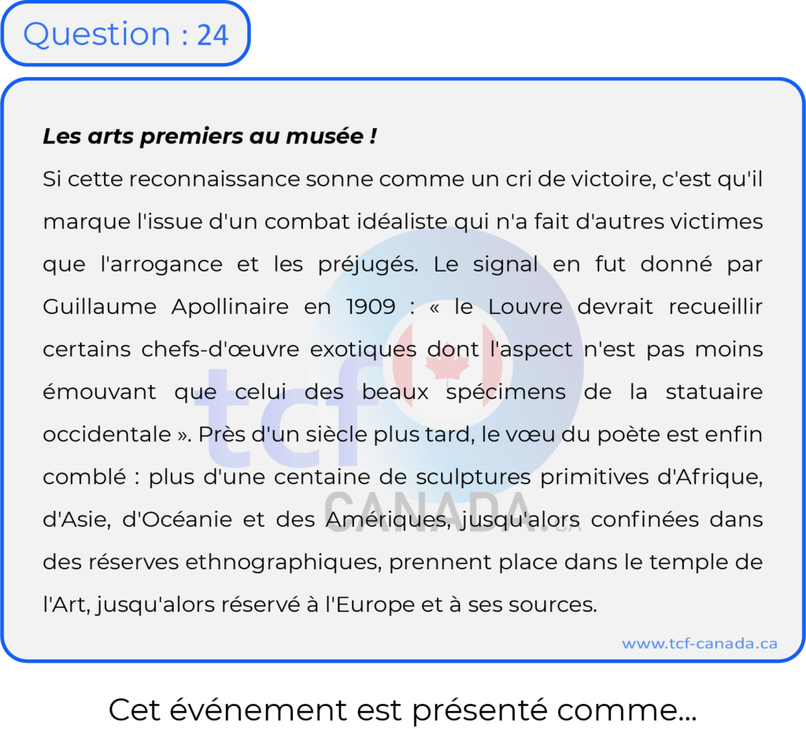
A. le résultat d'une lutte menée par des gens orgueilleux et intolérants.
B. le triomphe d'une opinion émise par Apollinaire, mais autrefois combattue.Bonne réponse
C. un miracle dû à la persévérance des archéologues sur plusieurs continents.
D. la consécration des œuvres européennes jusqu'alors remisées dans les musées.
Q25
B2
21 pt
Correction: B — De vérifier le profil des postulants.
A. De protéger les droits du personnel.
B. De vérifier le profil des postulants.Bonne réponse
C. D'encourager la création d'emplois.
D. D'éviter la discrimination à l'embauche.
Q26
B2
21 pt
Correction: C — Il remet en question leurs retombées positives.
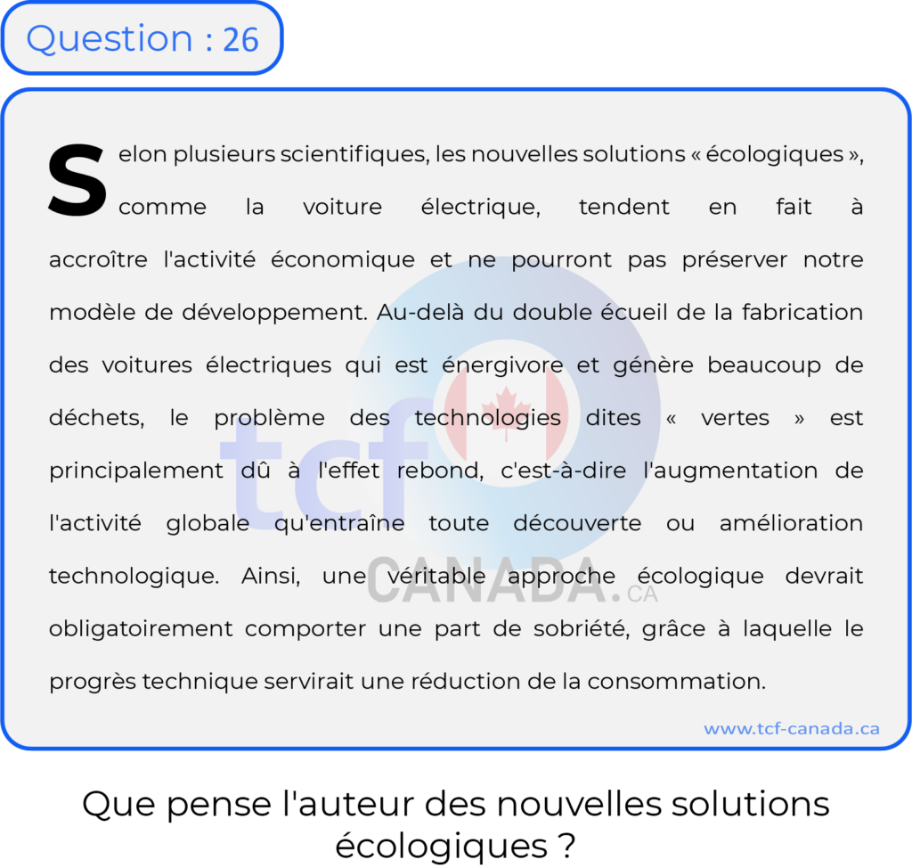
A. Il déconseille au grand public de les adopter.
B. Il estime qu'elles sont insuffisamment promues.
C. Il remet en question leurs retombées positives.Bonne réponse
D. Il révèle qu'elles contribuent au déclin industriel.
Q27
B2
21 pt
Correction: B — La coopération de ses membres.
A. L'efficacité d'un slogan choc.
B. La coopération de ses membres.Bonne réponse
C. La distribution de brochures.
D. La promotion en ligne de la campagne.
Q28
B2
21 pt
Correction: B — Elles représentent inégalement les milieux sociaux.
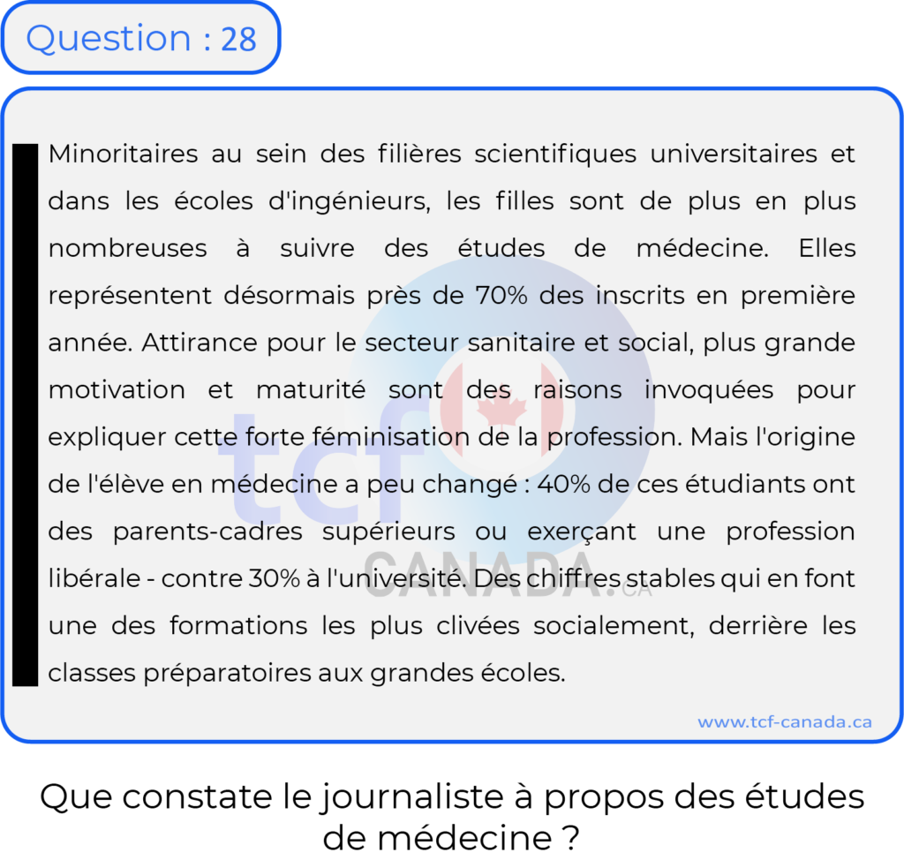
A. Elles ont moins de succès que les cursus scientifiques.
B. Elles représentent inégalement les milieux sociaux.Bonne réponse
C. Elles séduisent des étudiants aux profils variés.
D. Elles sont source de discrimination envers les femmes.
Q29
B2
21 pt
Correction: D — Les recherches sont limitées par le manque d'informations.
A. Les données des malades sont transmises aux fabricants.
B. Les incidents dus aux erreurs de diagnostic augmentent.
C. Les patients se méfient des innovations technologiques.
D. Les recherches sont limitées par le manque d'informations.Bonne réponse
Q30
C1
26 pt
Correction: B — À chaque activité correspond une région précise.
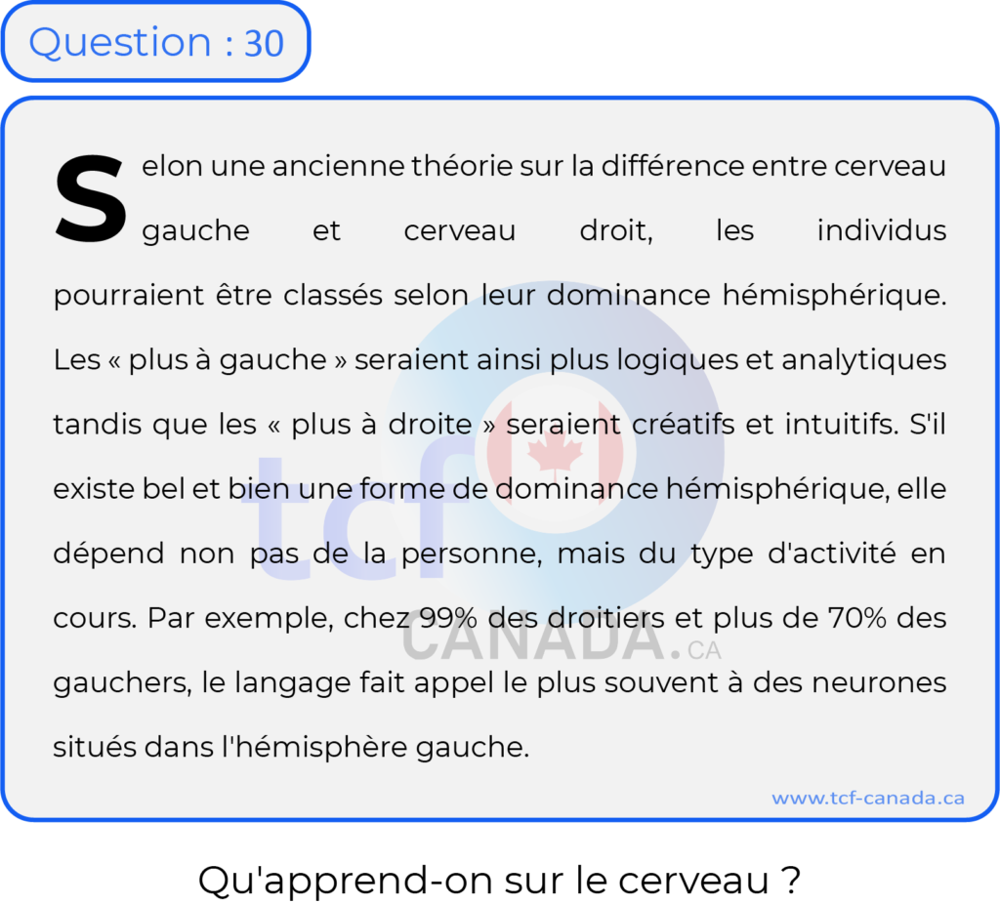
A. Il est stimulé en phase d'apprentissage du langage.
B. À chaque activité correspond une région précise.Bonne réponse
C. Les neurones sont concentrés dans quelques zones.
D. Son développement est lié au caractère d'un individu.
Q31
C1
26 pt
Correction: C — Le changement régulier des séries.
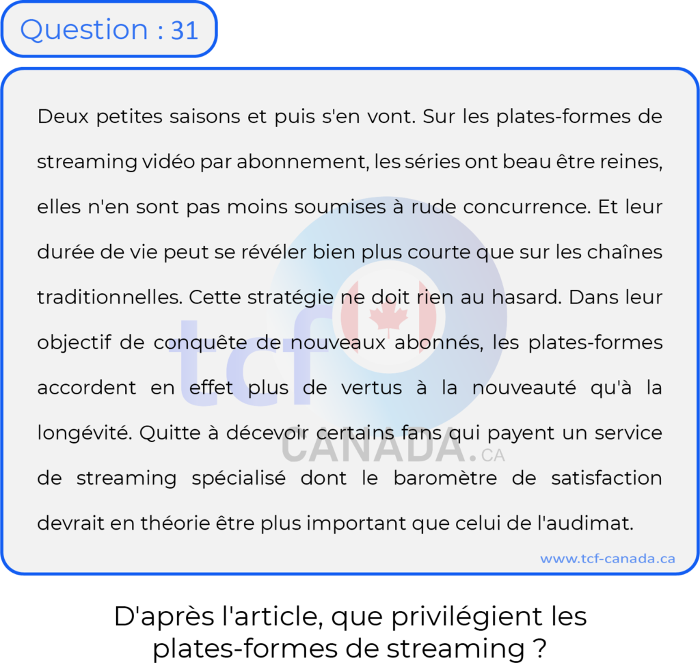
A. La longévité des programmes.
B. La qualité des services offerts.
C. Le changement régulier des séries.Bonne réponse
D. Le contentement de leurs abonnés.
Q32
C1
26 pt
Correction: B — Les financements publics contribuent à leur expansion.
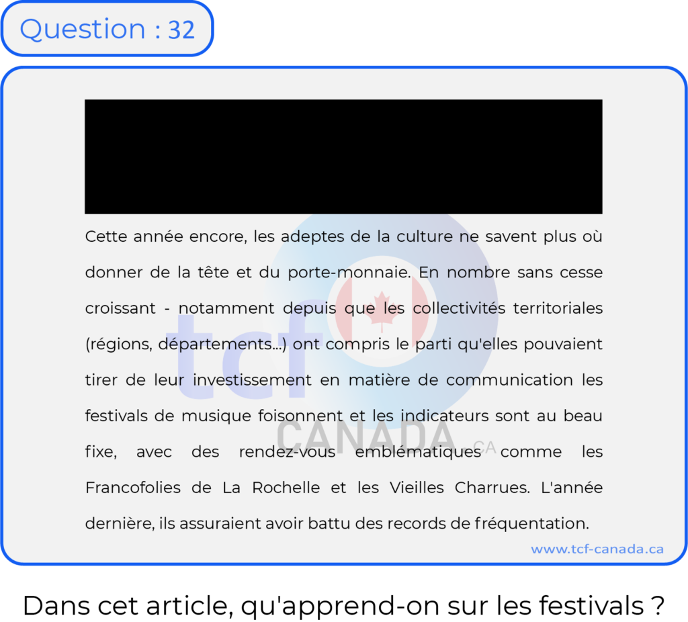
A. D'anciens artistes ont l'occasion de monter sur scène.
B. Les financements publics contribuent à leur expansion.Bonne réponse
C. Les organisateurs s'adaptent aux nouvelles tendances.
D. Les tarifs proposés dépendent de la programmation.
Q33
C1
26 pt
Correction: A — Il est méconnu du public visé.
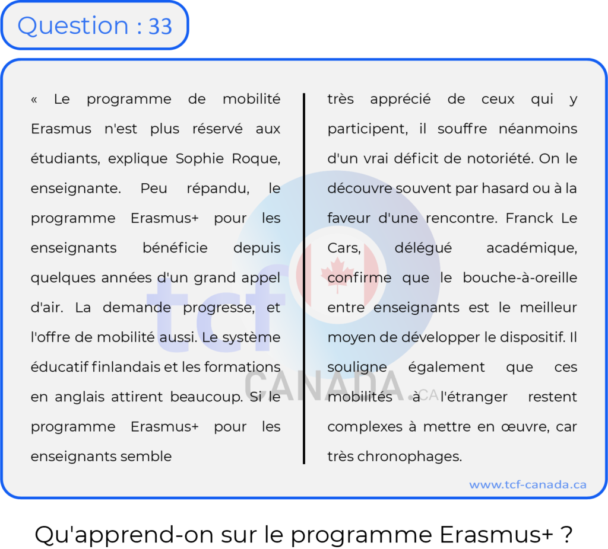
A. Il est méconnu du public visé.Bonne réponse
B. Il est restreint à quelques pays.
C. Il favorise certains établissements.
D. Il souffre d'une image négative.
Q34
C1
26 pt
Correction: D — Dans un parc naturel.
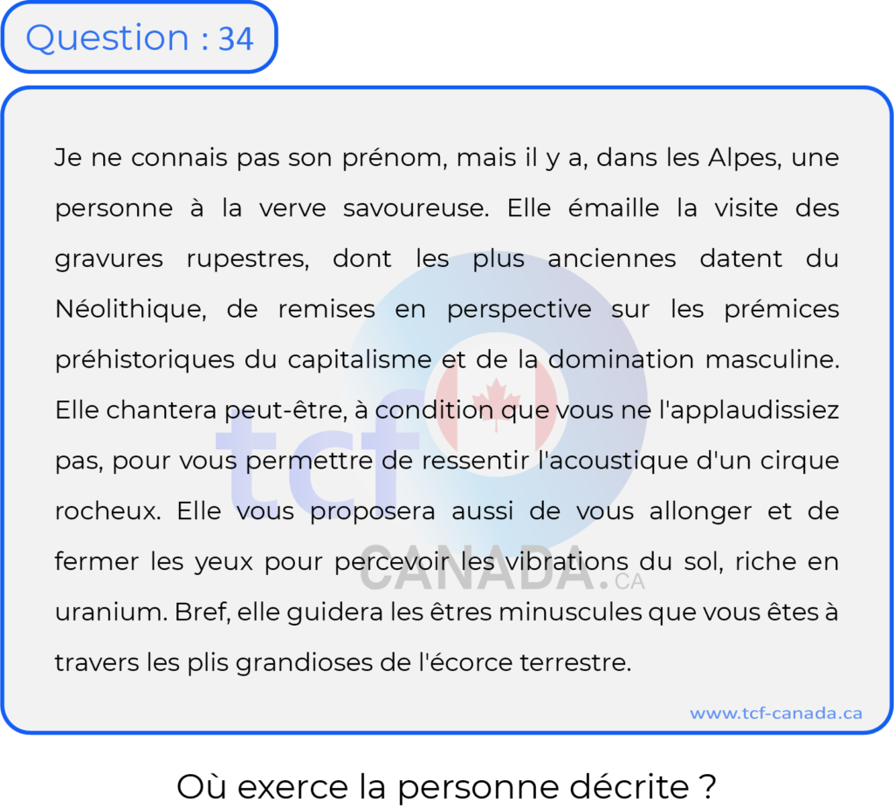
A. Dans un centre de relaxation.
B. Dans un laboratoire.
C. Dans un musée archéologique.
D. Dans un parc naturel.Bonne réponse
Q35
C1
26 pt
Correction: C — Il s'indigne en estimant que les reproches faits aux consommateurs sont injustifiés.
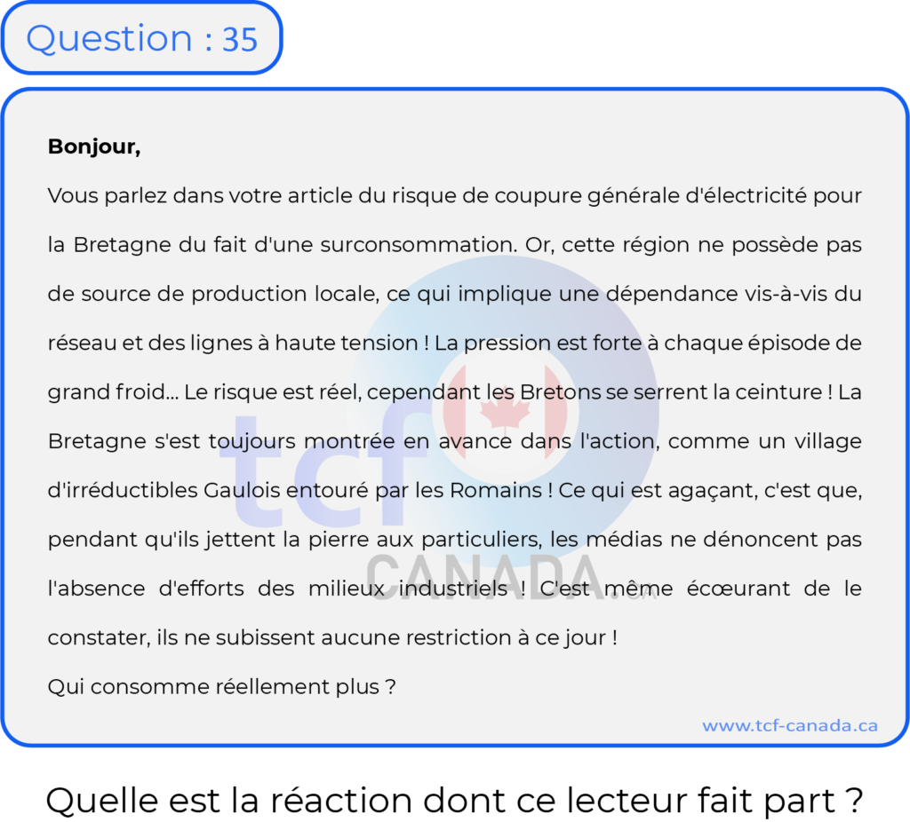
A. Il aimerait que sa région soit plus combative et engagée face aux problèmes locaux.
B. Il réclame de nouvelles dispositions tarifaires pour que les factures soient moins élevées.
C. Il s'indigne en estimant que les reproches faits aux consommateurs sont injustifiés.Bonne réponse
D. Il trouve inquiétantes les conséquences de la mauvaise gestion des sources d'énergie
Q36
C2
33 pt
Correction: B — La concertation est la clé d'une action réussie.
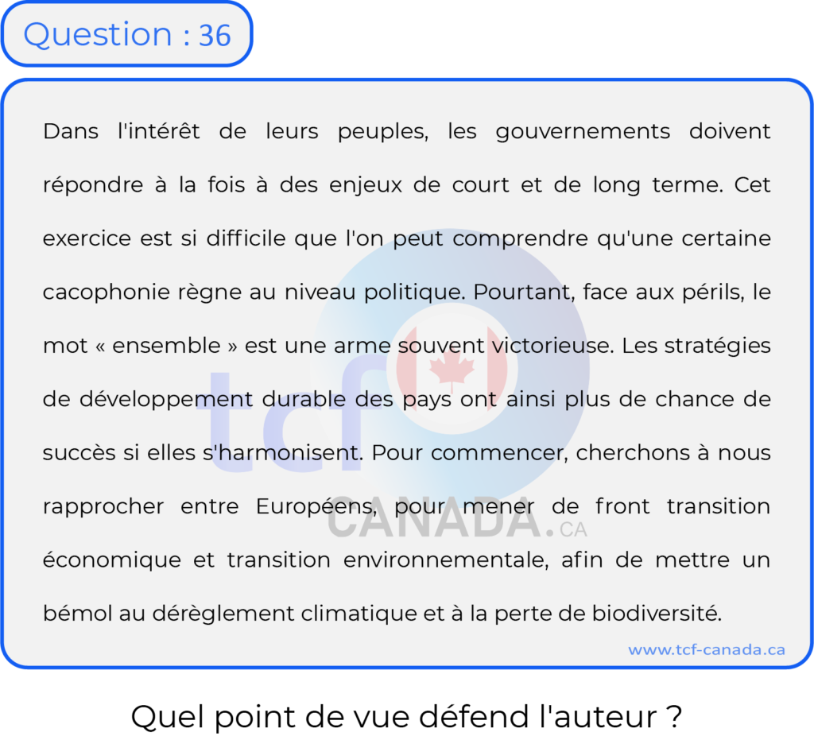
A. L'écologie est avant tout une affaire d'État.
B. La concertation est la clé d'une action réussie.Bonne réponse
C. Les mesures protectionnistes sont dépassées.
D. L'influence des lobbies est à prendre en compte.
Q37
C2
33 pt
Correction: C — Ouvrir ses cours à un public élargi.
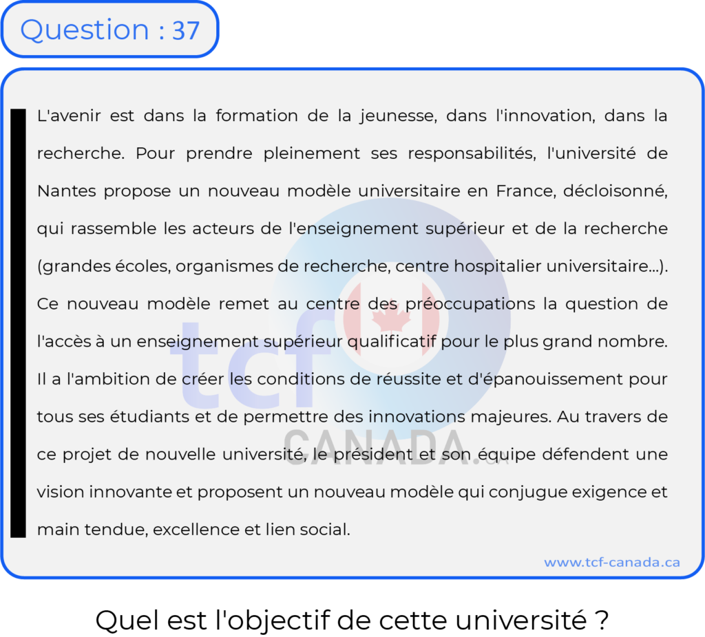
A. Attirer davantage d'étudiants brillants.
B. Être à la pointe de la technologie.
C. Ouvrir ses cours à un public élargi.Bonne réponse
D. Proposer des disciplines inédites.
Q38
C2
33 pt
Correction: A — L'évolution des aptitudes mentales.
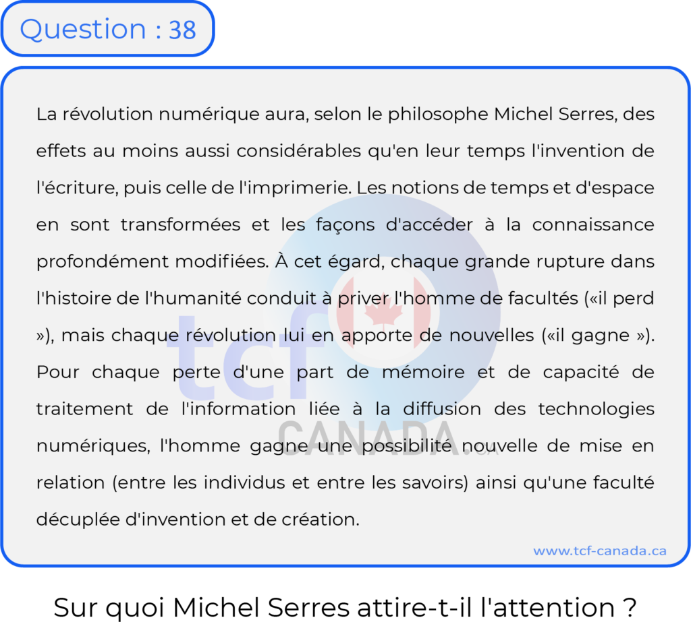
A. L'évolution des aptitudes mentales.Bonne réponse
B. La mondialisation de la recherche scientifique.
C. La transformation des savoirs fondamentaux.
D. Le maintien du patrimoine culturel.
Q39
C2
33 pt
Correction: D — Elles se justifient par des arguments fallacieux.
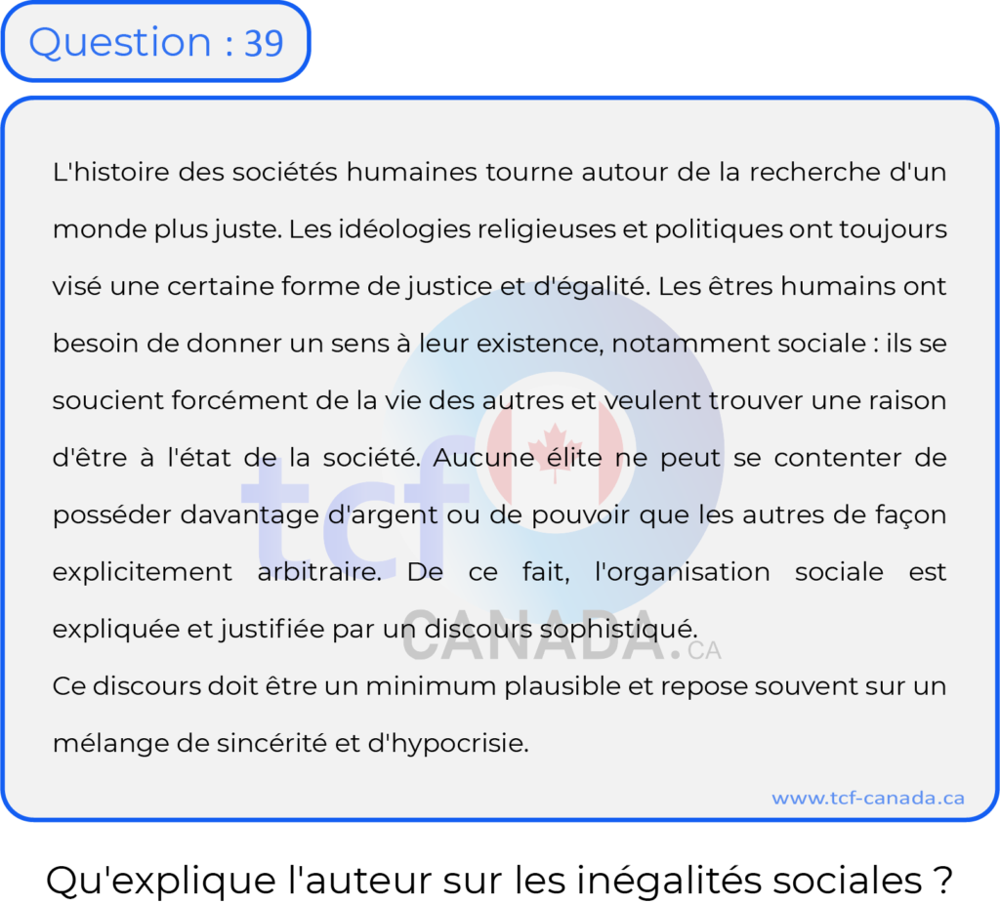
A. Elles diminuent dans toutes les organisations.
B. Elles résultent du fonctionnement d'une société.
C. Elles se combattent mieux avec de la sincérité.
D. Elles se justifient par des arguments fallacieux.Bonne réponse